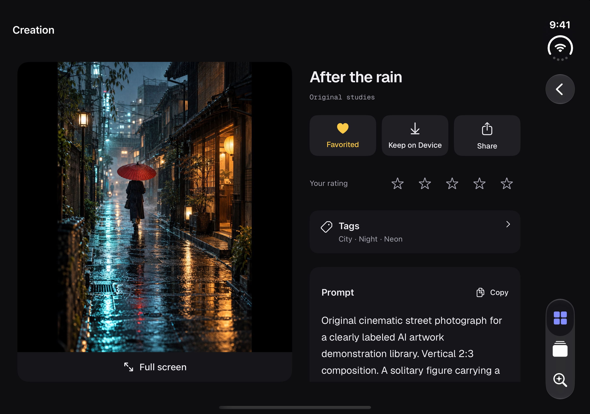
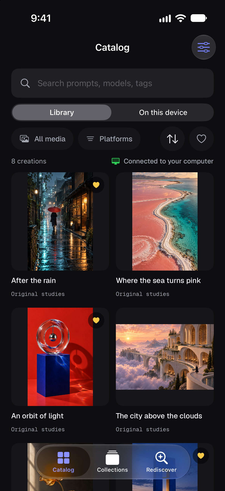

INTRODUCING GENCATALOG FOR IPHONE + IPAD
Your creations.
Within reach.
Find what you made. Remember how you made it.
Take your favorites with you.
Your GenCatalog library, now on iPhone and iPad. Browse your images and videos, revisit their prompts and details, and keep selected favorites available offline.
Join the TestFlight betaA companion to GenCatalog for Mac and Windows.
Free beta. No invitation email required.


ONE LIBRARY. A LITTLE MORE FREEDOM.
At home in
your hands.
Find the creation you know you made. Revisit its prompt and details. Rediscover something worth returning to.
Unfold the full picture.
Open it up to see your artwork alongside its prompts and details. Fold it closed and keep exploring.
HELP SHAPE WHAT COMES NEXT
Your library is going places.
GenCatalog for iPhone and iPad is taking shape. Join the beta, explore your library on the go, and help us make the experience better.